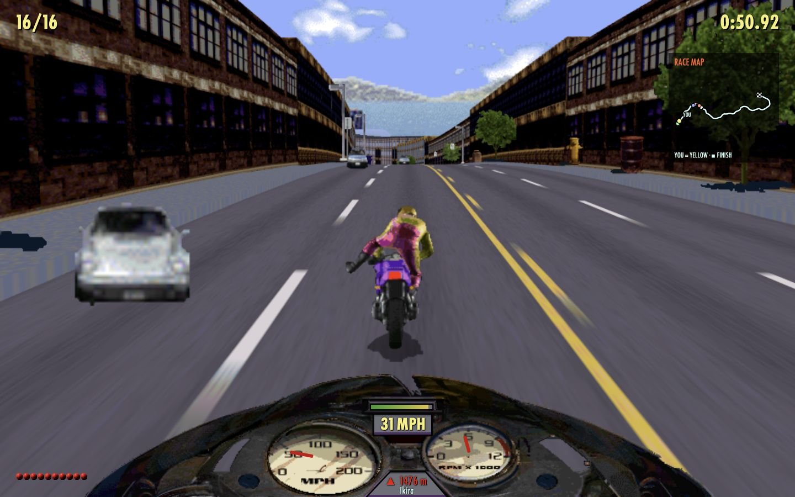

Road Rash combat controls: punches, kicks and weapons
In this browser version, attacks automatically turn toward a nearby opponent on either side of your bike. Ride alongside the other rider before striking: pressing the button starts an attack, but damage requires contact.
Play and use the attack controlsDefault keyboard attack buttons
These are the default assignments for the game on roadrash.site. They are not a universal control list for every Windows or console edition. If you have customised your keys, use your assignments in Settings → Controls.
| Attack | Button | Equipment |
|---|---|---|
| Punch | Space, X or Shift | Your fist |
| Kick | Enter or V | Your foot |
| Swing held weapon | /, Insert or Ctrl | Chain or club; punches when unarmed |
| Backhand swing | G, Z or Q | Held weapon; punches when unarmed |
| Club / bat shortcut | B | Club; punches unless you carry a club |
How to kick an opponent
Pull up beside a rival, then press Enter or V with the default keyboard layout. On a phone, use KICK. You do not need separate left and right attack buttons: the game chooses the opponent's side.
Hold the attack button to repeat after each attack sequence. If the rival pulls ahead, drops behind or moves out of reach, the next kick can miss. Closing the gap matters more than repeatedly pressing the key.

Chains, clubs and weapon stealing
Your rider's starting equipment depends on the selected rider. A chain or club is equipped gear, not a separate weapon you can always summon. Use the held-weapon button for the weapon you currently carry.
While unarmed, a correctly timed punch early in an opponent's weapon swing can take their club or chain. Rivals can take your weapon in the same way. Kicks do not steal weapons. There is no separate sword weapon or weapon-selection key in this version.
Why did my punch or swing miss?
The hand, foot or weapon must reach the other rider during the contact part of the attack. Being visible on the same screen is not enough. Match the rival's speed, stay alongside and avoid drifting away during the swing.
An empty swing is possible even when the animation looks correct. A rider farther up the road, on another route or already down is not the same target as an upright rival beside you.
Mobile attack buttons
PUNCH uses your fist, KICK uses your foot and SWING uses an equipped chain or club. SWING is disabled when you have no weapon. Hold a button to repeat. See the mobile layout options if a button is difficult to reach.
Gamepad attacks
With a standard gamepad mapping, X punches, B kicks, Y uses the held weapon and LB backhands. These refer to the standard button positions; the symbols on a different controller may vary.
For steering, braking and the remaining buttons, see the full how-to-play guide. To use these attacks in a race with friends, follow the multiplayer room guide.